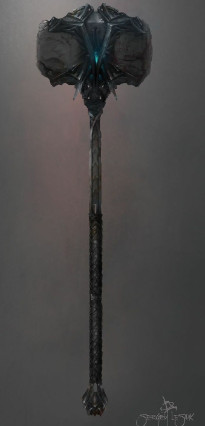
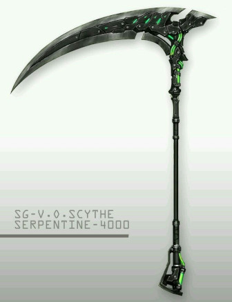
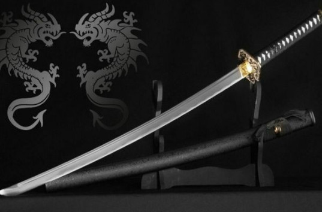
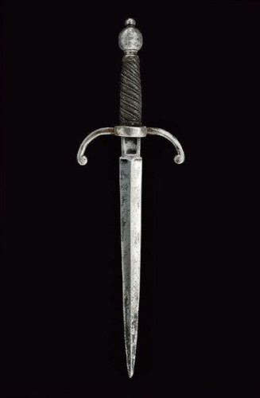
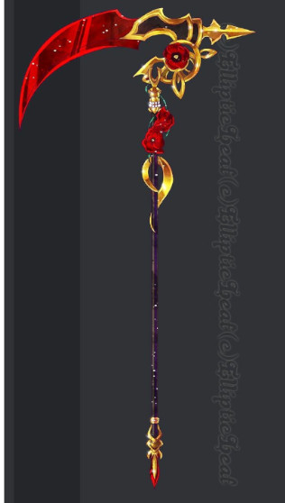
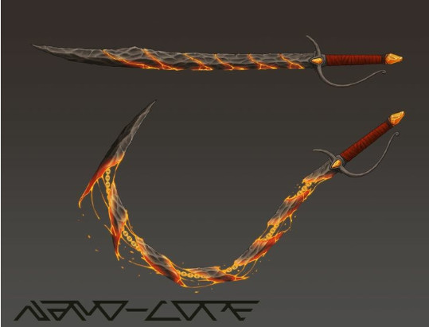
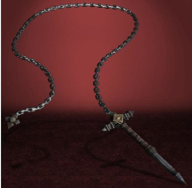
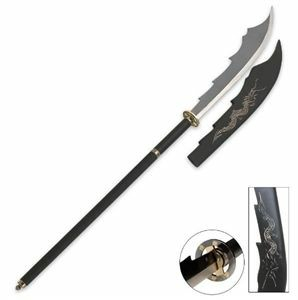
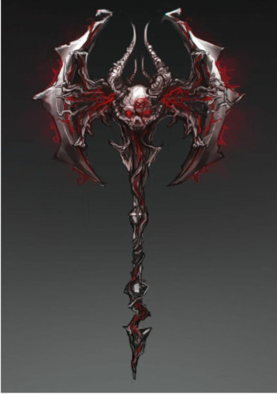

Varinha Rubi.
Manipulação básico de chamas e emisão de luz ate 2 metros.
Esta varinha é um bastão de madeira escura de aproximadamente 40 cm de comprimento com detalhes bordados em metal. Sua pedra Rubi de mana contém um fluxo alto de magia correndo dentro de si, o que permite ao seu possuidor usufruir melhor de seus poderes.

Katana Da Alvorada.
Sua bainha é envergada e sua lâmina é unilateral, com aproximadamente 75cm de lâmina e uma bainha de 20cm. O material Utilizado para sua lâmina foi um tipo especial de ferro encantado, o qual permite que a pessoa execute movimentos com muito mais precisão e é mais resistente que o ferro comum. A precisão certeira dessa espada permite cortar até mesmo uma árvore com apenas um movimento, desde que executado corretamente.

Martelo Abezethibou.
Este Martelo detém o nome de um dos Testamentos de Salomão, representando um dos Lordes Demônios, imperadores do inferno.
Sua estrutura conta com um grande cabo esculpido de um metal moldado nas fornalhas infernais, com sua simbologia na "Face do Diabo" presente no topo do cabo, onde também é posta um grande cristal arroxeado, embuído de mana Demoníaco, onde, se você chegar perto do cristal, conseguirá ouvir os gritos das almas ali seladas.
Efeito: Aumenta a energia do possuidor em 3 pontos.

Martelo Da Guerra.
Ares é o deus grego da guerra. Filho de Zeus e Hera, é um dos 12 deuses do Olimpo.Este martelo é embuido com uma pequena parcela da fúria deste deus, o que o torna poderoso e uma potente arma pesada. Seu cabo tem por volta de 90cm, com uma grande pedra de material desconhecido em sua ponta, de aproximadamente 60cm³..

Espada Sombria
Ela é uma espada resistente e forte pode ser muito útil para matar monstros mas não tão boa pra enfrentar boos ou algum player

Lança De Bug
Essa lança foi criada como um bug no jogo,ela é extremamente leve e sua velocidade se lançada é 3x mais rápida que uma normal.
Efeito:Ela volta direto para mão do possuidor quando lançada.

Espada Das Almas
Criada especialmente por Lucifer essa espada triplica o poder do player quando está em sua mão,sua lâmina é tão afiado que corta tudo oq tem pela frente.Lúcifer usava para castigar pecadores no inferno.
Para usá-la deve ter no mínimo 30 de força.

Foice Ceifeira
Uma foice do tamanho médio com parte de aço e esmeralda,completamente afiada e resistente podendo cortar uma rocha de 5 metros facilmente.

Arreios De Ponta Tripla
Podendo desferir um ataque triplo com suas massas composta por uma esfera de metal maciço com espinhos, presa diretamente a um cabo ou pendurada por uma corrente.
Cada Esfera Possuir 5 de força, dando um combo de 3 Golpes 15 de dano

Katana De Ferro Puro
Uma katana de ferro puro,ela é uma katana normal sem nada de especial,mas consegue causar danos a monstros,bosses e animais.

Escudo Dos Deuses
Este é um escudo abençoado pelos deuses,ele te dará 20 de resistência quando estiver o usando além daprópria proteção doEste mesmo.O escudo é super resistente e diria que inquebrável ou quase.
Deve ter no mínimo 25 de energia para usá-lo.

Escudo Castor
Esse escudo é muito forte resistente forjado a partir de um minério incomum.Ele consegue aguentar uns 3 golpes de um boss do primeiro mapa.

Escudo De Ferro
É um escudo normal de ferro,não tem muito em especial,mas ele consegue aguentar 1 golpe de um boss do primeiro mapa.

Espada De Zeus
Essa espada é extremamente poderosa podendo usar o elemento raio como como bem entender,tendo o poder de gerar um raio do céu no lugar que deseja,só pode ser gerado 2 raios num único dia,ela também tem o poder de manipular o clima podendo gerar um clima chuvoso ou caloroso.
Efeito:Manipulação do clima,raios do céu e raios normais.
Para usá-la o player deve ter no mínimo 30 pontos de atributos em energia e 30 em mana.

Adaga dos Caçadores
Feita de aço encontrado perto de light's rest e couro de javali, é uma adaga simples e precisa de curto alcance, além de ter uma lamina rasoavelmente afiada que consegue cortar todo tipo de carne de animal, é leve para o arremesso. Foi feita por um ferreiro pouco reconhecido em Forenhval, mas que anda conquistando seu espaço nas vendas de armas devido suas adagas de qualidade boa geralmente usada por iniciantes indecisos com seus equipamentos iniciais ou caçadores um pouco mais experientes que apreciam sua leveza e força, que é a origem de seu nome.

Royal Demon Rose
A foice criada por um ferreiro treinado pelos Deuses por ser digno de tal ato,ele conseguiu amplificar um grande poder envolvendo magia a mais pura magia da natureza humana, sendo assim o ataque dessa foice tem o dobro de poder a quem a empunha-la, podendo realizar "cortes" no ar de tal forma com um tanto de maestria, ela foi feita de minérios scarlates quase impossíveis de se encontrar, enquanto a mesma possui uma lâmina bastante afiada,um corte liso que não existe explicação, até mesmo um arcanjo teme o poder dessa foice forjado pelo ferreiro.

Adaga De Domador
Seu formato não a torna uma arma muito efetiva, mas sim muito ágil, a qual consegue se destacar por serem feitas muitas táticas e manobras diferentes para diferentes usos. É mais resistente que pedra, porém seu material não é superior ao ferro, com 15cm de lâmina e certa leveza devido ao tamanho.

Espada Salamandra
Essa espada é feita de pedra,mas não se engane ela consegue se desdobrar como player quiser.Ótima pra fazer emboscadas surpresas.

Cavalo
O cavalo é uma montaria do rpg,ele é mais rápido que um camelo.Montarias são muito requisitadas caso queira ir em algum lugar mais rápido

Camelo
O camelo é uma montaria do rpg,não é tão inteligente quanto o cavalo,porém é bem mais inteligente.

Espada Serpente
Parece ser uma espada de pedra normal,mas ela consegue se destender com correntes aumentando seu alcance e tamanho,ótima para domadores de bestas.

Espada Da Morte
Essa espada é feita de 3 camadas de ferro negro,ela é muito forte mesmo e ainda tem um gancho ligado por corrente tudo feito de ferro negro para destruir qualquer tipo de adversário.
Para usá-la deve-se ter 30 pontos em força.

Adaga Rubi
UEssa adaga é extremamente afiada,o lugar que ela corta dá duas vezes mais mais dano fazendo com que o corte seja bem profundo.
Efeito:Dobro de dano

Cajado Demoníaco
Um cajado para magos,ele foi forjado nas profundezas do inferno.Ele tem os poderes de te deixar invisível durante 1 hora(1 cena) e ter uma habilidade média de dominar raios.
Sua habilidade de invisibilidade só pode ser usada 1 vez por dia e caso o player tenha 25 pontos em mana.

Espada Selvagem
É uma espada feita de cobre,cipós e outros materiais,mais forte que a espada inicial mas não tão quanto uma de ferro.Deve ser usada com cuidado.

Espada Do Vampiro Rei
Pertencia a o antigo rei dos vampiros,após ser derrotado em uma luta intensa contra lobisomens sua espada foi perdida pelo mundo,até que uma velha ferreira a achou e está a vendendo no mercado negro.Esssa espada é exclusiva para a raça de vampiro,sua lâmina é feita de rubi.
Efeito:Se uma gota de sangue toca a lâmina ela fica uma cor brilhante e triplica um dano normal.
Para usá-la deve ser um vampiro de level alto,no mínimo level 15.

Arco Angélico
Esse arco é muito poderoso,tão resistente quanto diamante,quando sua flecha é atirada em algum lugar esse lugar é explodido automaticamente.Foi criado pelas mãos de Artemis para matar Hercules enquanto dormia sem ser percebido.Agora esta a venda no mercado negro.
Efeito:Explosão automática.
Para usá-lo deve ter no minimo 25 de inteligência.

Cajado Selvagem
Um cajado feito de uma madeira selvagem que aumenta um pouco mais os poderes de um cajado normal.

Arco Arcaico
Esse arco é feito de ferro e madeira,ele se destaca em sua linha que é extremamente resistente podendo atirar flechas de ferro negro na velocidade de uma normal.
Há boatos que um arqueiro que o possuia conseguiu derrotar 1 boss junto com seus amigos ao possuir este arco.
Efeito: Linha super resistente

Foice Corrente
Suas correntes de aço foram banhadas em uma água purificada por magos, os quais puseram um encantamento nesta foice. O comprimento normal da corrente é por volta de 2m e a foice tem um tamanho de 67cm.
Efeito: A corrente consegue se estender em até 5m de distância.

Espada Tripla
Essa espada é dividida em 3 lâminas,a normal,ela souta e por baixo de tudo uma bem fina.É feita de platina.Ela era uma das armas mais utilizadas entre alguns espíritos e monstros que utilizavam armas para atacar.

ü¶ØBastão Pendragonüêâ
Essa arma foi forjada a muito tempo por um antigo carvalho de uma Villa antigo um monge juntou tudo que precisava , uma barra de ferro negro , uma madeira bruta de um carvalho antigo o suficiente e resistente e o coração de um cocatriz.O monge se chama Arthur Pendragon, Arthur usava essa arma com a maior maestria já vista na antiguidade, Arthur falava que a lâmina e abençoada por sangue de antigos usuários dela que derramaram seu próprio sangue e alma dentro da lamina, o usuário quando usa e capaz de ter todo o conhecimento sobre oque está acontecendo na batalha além de almentar seus status, já que essa arma foi passada em geração em geração seu efeito de corte e quase indetectável já que pra ser bem precisa ela tem que ser usada duas vezes em diagonal pra causar o corte cego um efeito da lâmina que permite um corte simples e rápido capaz de cortar a maioria das coisa menos matérias cristalizados,equimaentos e armas rank b acima e etc. Esse bastão é leve e fácil de manusear se estiver na mão de um monge,mas se estiver nas mãos de alguem de outra classe...ele pode amaldiçoar o corpo do mesmo.
Efeito: Buff em status,sutileza nos movimentos e força de batalha
Precisa ser um monge com a força e agilidade upadas no minimo até o 15

ü™ìMachado Skull BlacküíÄ
Esse machado foi feito no inferno pelo próprio rei do caos que usava ele para batalhas.Por conta do rei do caos "ser" um ser de pura maldade e ódio, esse machado na mão dele era muito poderoso graças a o rei do inferno que ajudou a batizar a suposta arma, E pelo machado permanecer, muito tempo na mão do rei do caos ele acabou ganhando alguns poderes a mais, por causa disso agora esse machado controla chamas e deixa quem está usando imune a qualquer fogo, e assim como era feito pelo rei do inferno ele consegue usar o ódio e maldade de seu usuário para ficar mais forte mas ele pode acabar tomando controle de seu usuário usando o ódio pra controlar o usuário , por que só usuários da raça selvagem com bastante treinos, conseguiria usar ele perfeitamente.
Efeito: Imunidade a fogo e manipulação de alta densidade de fogo
Pode ser usado apenas por selvagens que possuam no minimo 25 pontos em força e 20 em mana